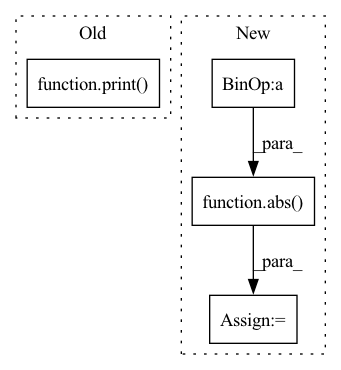

Pattern ID :15420
Before Change
total_params_size = abs(total_params * 4. / (1024 ** 2.))
total_size = total_params_size + total_output_size + total_input_size
print( "================================================================")
print("Total params: {0:,}".format(total_params))
print("Trainable params: {0:,}".format(trainable_params))
print("Non-trainable params: {0:,}".format(total_params - trainable_params))
print("----------------------------------------------------------------")After Change
// assume 4 bytes/number
if input_data is not None:
total_input_size = abs( sys.getsizeof(input_data)/(1024 ** 2.))
elif input_shape is not None:
total_input_size = abs(np.prod(input_shape) * batch_size * 4. / (1024 ** 2.))
else:
total_input_size = 0.0In pattern: SUPERPATTERN
Frequency: 3
Non-data size: 4
Instances Fragment ID: 52376383
Project Name: lyhue1991/torchkeras
Commit Name: 53a7bd32d9aa0dc5dd3f26b0f872f4b23f8124f9
Time: 2022-05-26
Author: lyhue1991@163.com
File Name: torchkeras/summary.py
M Class Name: AnonimousClass
N Class Name: AnonimousClass
M Method Name: summary(6)
N Method Name: summary(5)
M Parent Class:
N Parent Class:
M File Name: torchkeras/summary.py
N File Name: torchkeras/summary.py
M Start Line: 15
M End Line: 111
N Start Line: 8
N End Line: 120
Before Change
fastraster_time_gpu = time.time() - tic
print("Runtimes:")
print(
"Fast Marching: {:.6f} s \nGeodisTk raster: {:.6f} s \nFastGeodis CPU raster: {:.6f} s".format(
fastmarch_time, geodistkraster_time, fastraster_time_cpu
)
)
if device:
print("FastGeodis GPU raster: {:.6f} s".format(fastraster_time_gpu))
After Change
plt.axis("off")
plt.title("(e) FastGeodis (gpu) | ({:.4f} s)".format(fastraster_time_gpu))
diff = (
abs( toivanenraster_output - fastraster_output_cpu) / (toivanenraster_output + 1e-7) * 100
)
plt.subplot(2, 4, 4)
plt.imshow(diff) Fragment ID: 52376374
Project Name: masadcv/fastgeodis
Commit Name: a1906e989649c1f0b8fdbed147c1d576ac5c41f3
Time: 2022-07-22
Author: muhammad.asad@kcl.ac.uk
File Name: samples/demo2d.py
M Class Name: AnonimousClass
N Class Name: AnonimousClass
M Method Name: evaluate_geodesic_distance2d(2)
N Method Name: evaluate_geodesic_distance2d(2)
M Parent Class:
N Parent Class:
M File Name: samples/demo2d.py
N File Name: samples/demo2d.py
M Start Line: 29
M End Line: 158
N Start Line: 18
N End Line: 100
Before Change
returns the observation, the reward, and a done signal for end of episode
obs must be a list of numpy arrays
print( f"obs: {self.drone_int.read_obs()}")
pass
// return obs, rew, done
def get_observation_space(self):After Change
obs = self.drone_int.read_obs()
// print(f"obs:{obs}")
o = [np.array([obs[0], obs[1], obs[2], self.target, time.time() - obs[4]], dtype=np.float32), ]
r = - np.float32(abs( self.target - obs[0]) )
d = (r >= -1)
return o, r, d
Fragment ID: 52376373
Project Name: trackmania-rl/tmrl
Commit Name: cd4eb35420d67250b9c25e3bee29a31bb406aa28
Time: 2020-11-04
Author: yann.bouteiller@hotmail.fr
File Name: agents-rt/agents/custom/custom_gym_interfaces.py
M Class Name: CogniflyInterfaceTask1
N Class Name: CogniflyInterfaceTask1
M Method Name: get_obs_rew_done(1)
N Method Name: get_obs_rew_done(1)
M Parent Class: RealTimeGymInterface
N Parent Class: RealTimeGymInterface
M File Name: agents-rt/agents/custom/custom_gym_interfaces.py
N File Name: agents-rt/agents/custom/custom_gym_interfaces.py
M Start Line: 454
M End Line: 455
N Start Line: 459
N End Line: 465